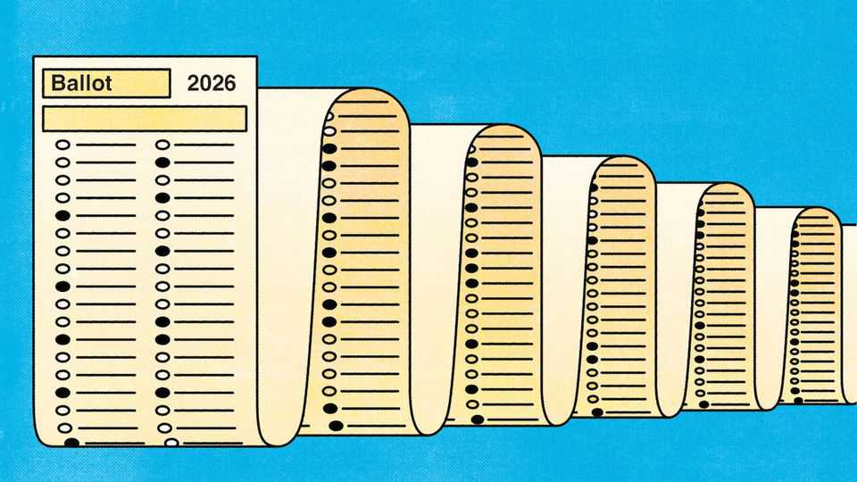
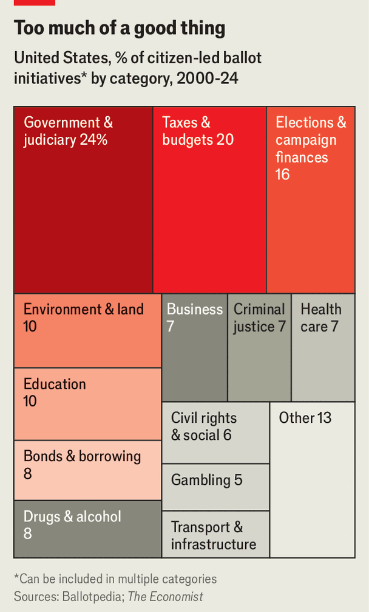
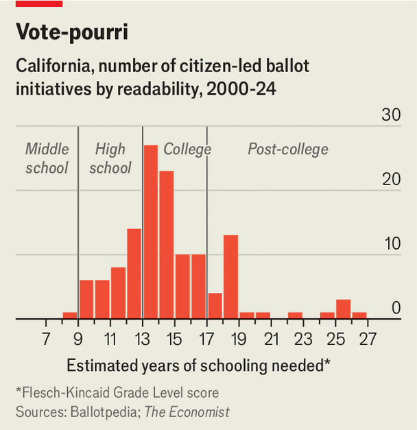

America’s other elections problem
No other rich democracy hands as many decisions directly to its voters
July 16th 2026

IT IS OFTEN said that Americans love to work. Perhaps that is why they have made one of their fundamental obligations as citizens—voting—feel like work, too. A civically minded person in Houston, Texas, may already have voted six times this year. When voters in California cast their ballots in November, they will consider a wealth tax from three different angles. In Idaho, home to just 2m people, voters will elect 49 judges, a slew of county coroners and decide which of six firearms should become the state’s official gun.
Much attention is paid to whether the rules of democracy are being broken. Donald Trump claims that American elections are marred by voter fraud, despite scant evidence. This month his administration dispatched more than 250 federal investigators to probe Fulton County’s handling of the 2020 election, which he lost. But there is a more prosaic question: does America’s voting system make sense? No other rich democracy hands as many decisions directly to its people.
Americans are expected to vote for judges, sheriffs, coroners and school-board members. Through ballot initiatives they also weigh in on everything from whether actors in pornographic films must wear condoms to arcane details of prescription-drug pricing. The assumption is that more voting makes for a healthier democracy. But ballots of biblical length often do the opposite, making government less efficient and less accountable.
America’s electoral sprawl happened in two stages. The first came under Andrew Jackson, the country’s seventh president, who handed more power to non-landowning white men by allowing them to elect more officials. The second stage came at the turn of the 20th century, when reformers gave citizens more direct influence through ballot initiatives and referendums. Both moments reflected concern that elites and political parties had amassed too much control over government, says David Schleicher of Yale University. The solution, he says, was to “diffuse power to the people as a check” on those groups.
In total Americans choose some 500,000 officials, roughly five times as many per person as in Britain. Even with a population of 340m, America has struggled to find enough candidates to contest all of these races. Between 2018 and 2025 nearly two-thirds of candidates ran unopposed, according to analysis by Ballotpedia, an online resource.

About half of states also allow citizens who gather enough signatures to place initiatives on the ballot. These ask voters to decide questions that in most other democracies are left to legislatures. The Economist scraped data from Ballotpedia covering 1,728 ballot measures from the past three decades. They cover everything from taxation to contentious social issues (see chart).
No voter can reasonably be expected to make an informed decision about every item on the ballot. The sheer number of elected officials makes it difficult to know who is responsible for what. Even an expert steeped in local governance might struggle to judge whether a county comptroller has succeeded or failed in office, says Mr Schleicher. Yet on many ballots, voters face that challenge dozens of times. When they reach the more obscure races, they are “flying blind”, says Todd Donovan of Western Washington University.
Ballot initiatives can be even harder to understand. The Economist analysed the text of 130 initiatives in California since 2000. Using a metric that scores text based on sentence and word complexity, we found that most required college-level reading comprehension (see chart). One in four demanded the reading comprehension of someone with a graduate degree. Yet only a third of Americans have at least a bachelor’s degree.

After deciphering the language of initiatives, voters weigh their merits. This year Californians must become health economists as they decide whether federally funded community clinics should be required to devote a set share of revenue to their charitable mission rather than overhead costs. Obscure decisions like this can have lasting consequences. In 1992 Colorado voters approved the cleverly named Taxpayer Bill of Rights, a constitutional amendment that ties state revenue growth to inflation. As a result, Colorado must in some years refund taxpayers while cutting services because the cost of things such as health care rises faster than inflation.
In principle, ballot initiatives allow groups unable to persuade legislatures to appeal directly to voters. But most are no longer the homespun, volunteer campaigns of yesteryear. They are often sponsored by corporations, unions, ideological organisations or wealthy patrons, which hire signature-gathering firms and specialised consultants. “You can’t really get on the ballot anymore without substantial resources,” says Mr Donovan. Even the original wealth-tax measure in California was not a grassroots effort. It was sponsored by a health-care labour union and drafted with the assistance of experienced lawyers. The campaign against it is largely financed by billionaires. Sergey Brin, Google’s co-founder, has poured $82m into the effort.
As ballots grow longer, more complex and more susceptible to organised interests, some states are looking to rein them in. Massachusetts, for example, has proposed a commission to reform the ballot-initiative process. But politicians tend to be wary of taking power away from voters—or, at least, of being seen to do so. Few elected officials are keen to reduce the number of elected offices, not least because some would be eliminating their own jobs. Making government more efficient and officials more accountable will not be easy. Perhaps such reforms should be put before voters. ■
Stay on top of American politics with The US in brief, our daily newsletter with fast analysis of the most important political news, and Checks and Balance, a weekly note that examines the state of American democracy and the issues that matter to voters.